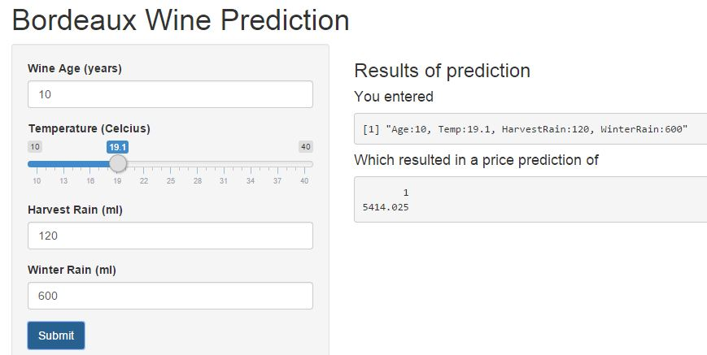

as Reported in Chance Magazine by Orley Ashenfelter
as Reported in Chance Magazine by Orley Ashenfelter
Orley Ashenfelter from Princeton argued that he could predict the quality (and therefore the price) of wine
without tasting it by the help of linear regression using weather related variables.
The paper can be found here
Orley Ashenfelter faced strong criticism from Robert Parker a famous wine expert
However Orley Ashenfelter's model proved quite succesfull regarding auction prices
and many times he beat experts' opinions
The data were downloaded from MITx's course The Analytics edge here
wine = read.csv("./wine.csv"); head(wine,2)
## Year Price WinterRain AGST HarvestRain Age
## 1 1952 7.4950 600 17.1167 160 31
## 2 1953 8.0393 690 16.7333 80 30
| (Dependent variable) Price: | typical price (log) in 1990-1991 wine auctions |
| (Indepedent Variables) | |
| Age: | the age (years) of the wine bottle |
| AGST (Temperature): | average growing season temperature (degrees celcius) April-Sept |
| Harvest Rain: | harvest period (August and Sept.) rain in (ml) |
| Winter Rain: | winter period (Oct.-March) rain in (ml) |
wineModel<-lm(Price ~ Age+AGST + HarvestRain + WinterRain , data=wine)
summary(wineModel)$adj.r.squared;summary(wineModel)$coefficients
## [1] 0.7961738
## Estimate Std. Error t value Pr(>|t|)
## (Intercept) -3.651570330 1.6880876083 -2.163140 4.166538e-02
## Age 0.023848014 0.0071666557 3.327635 3.054914e-03
## AGST 0.616391558 0.0951746617 6.476425 1.626099e-06
## HarvestRain -0.003860600 0.0008075278 -4.780764 8.970404e-05
## WinterRain 0.001166719 0.0004820325 2.420416 2.420786e-02
Interpretation Examples

Click here to go to shinyapps.io
shinyUI(
pageWithSidebar(
headerPanel("Bordeaux Wine Prediction"),
sidebarPanel(
numericInput('Age', 'Wine Age (years)', 10, min = 0, max = 100, step = 1),
sliderInput('AGST','Temperature (Celcius)', 10, 40, 16.5, step = 0.1, round = FALSE,
ticks = TRUE, animate = FALSE),
numericInput('HarvestRain', 'Harvest Rain (ml)', 140, min = 0, max = 2000, step = 10),
numericInput('WinterRain', 'Winter Rain (ml)', 600, min = 0, max = 2000, step = 10),
submitButton('Submit'),
h4("Enter values and hit submit to calculate price"),
br(),
p("With this app one can predict prices for vintage bordeaux wines. The depedent variables are:"),
strong("Age:"),
em("wine's age in years"),br(),strong("Temperature:"),
em("average growing temperature (degrees celcius) April-Sept"),br(),
strong("Harvest Rain:"),
em("Harvest (August and Sept.) rain in (ml)"),
,br(), strong("Winter Rain:"),em("Winter (Oct.-March) rain in (ml)"),
br(), br(),
p("This app is a reproduction of Orley Ashenfelter's study",
a("Predicting the Quality and Prices of Bordeaux Wines .",
href = "http://www.wine-economics.org/workingpapers/AAWE_WP04.pdf")),
p("Wine dataset downloaded from course: ",
a("MITx Analytics edge.",
href = "https://www.edx.org/course/analytics-edge-mitx-15-071x-0"))
),
mainPanel(
h3('Results of prediction'),
h4('You entered'),
verbatimTextOutput("inputValue"),
h4('Which resulted in a price prediction of '),
verbatimTextOutput("prediction")
)
)
)
wine = read.csv("data/wine.csv")
wineModel<-lm(Price ~ Age+AGST + HarvestRain + WinterRain , data=wine)
getPricePrediction <- function(paramAge,paramAGST,paramHarvestRain,paramWinterRain){
userinput=data.frame(Age=paramAge,AGST=paramAGST,
HarvestRain=paramHarvestRain, WinterRain=paramWinterRain)
predict(wineModel, newdata=userinput)
}
shinyServer(
function(input, output) {
output$inputValue <- renderPrint({
paste("Age:",input$Age, ", Temp:",input$AGST,
", HarvestRain:",input$HarvestRain,", WinterRain:",input$WinterRain, sep = "")
})
output$prediction <- renderPrint({
exp(getPricePrediction(input$Age,input$AGST,input$HarvestRain,input$WinterRain)) })
}
)